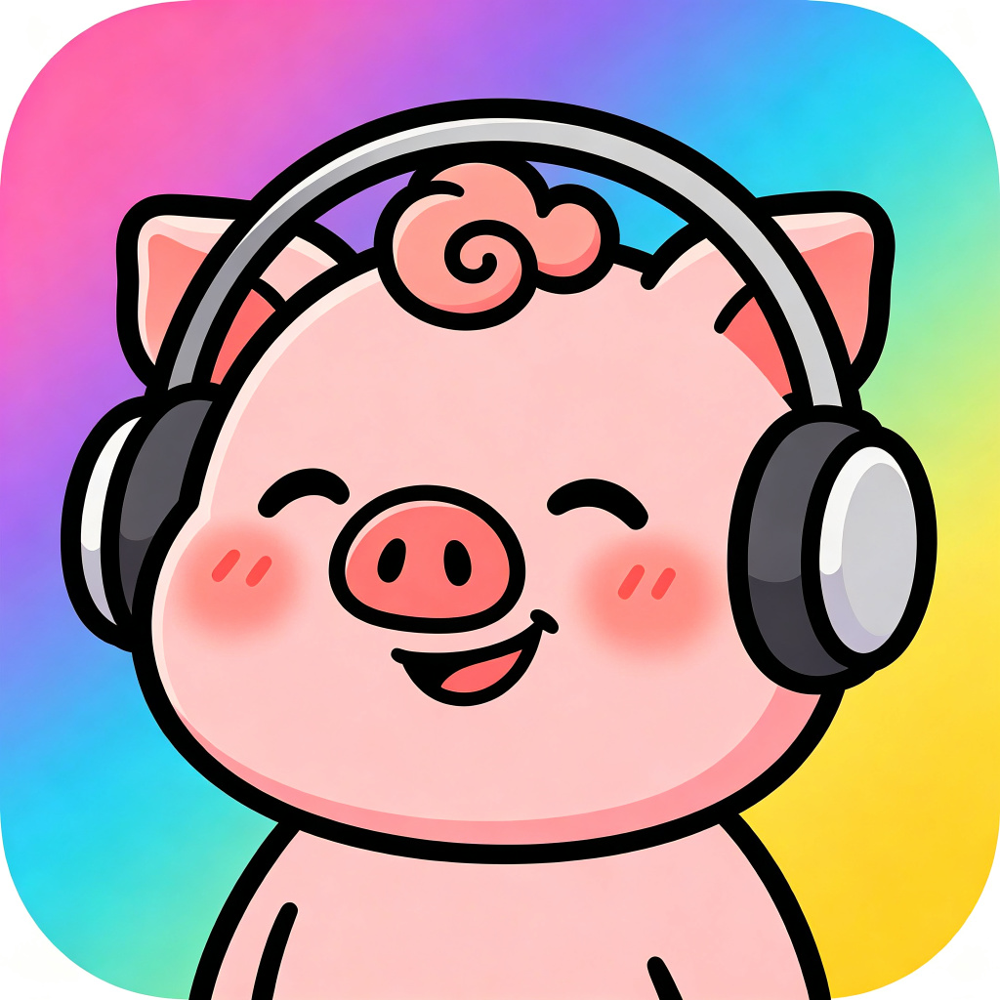

隐私政策
小猪耳鸣舒缓 · 更新日期：2026-09-21
1. 引言
本隐私政策适用于“小猪耳鸣舒缓”。我们尊重并保护您的个人信息和隐私。
2. 我们收集和不收集的信息
本应用不要求注册或登录，不收集、不上传姓名、手机号、邮箱、位置、通讯录、相册、相机、支付信息、账号密码或广告标识符。当前发布包不包含广告、账号或统计 SDK。
3. 本地保存的信息
应用会在设备本地保存最近试听、收藏、音量、混音、播放模式和定时设置，用于恢复使用状态。这些数据不会上传到服务器，卸载应用后会被系统删除，也可以在应用内清除。
4. 权限说明
iOS 版本使用系统音频后台模式，用于用户主动播放声音后继续播放、显示锁屏媒体控制和执行定时渐弱。应用不申请网络、位置、通讯录、相机、相册、麦克风或外部存储权限。
5. 第三方组件
应用使用 Flutter、just_audio、audio_service、audio_session、audioplayers、shared_preferences 和 provider 等开源组件，用于实现本地播放、混音和设置保存。
6. 未成年人保护
本应用不是专门面向儿童的医疗或治疗产品。未成年人应在监护人指导下使用。
7. 医疗免责声明
本应用只提供声音播放和放松辅助，不提供医疗诊断、治疗、处方或专业建议，不能替代医生或其他专业人员的意见。持续耳鸣、失眠或身体不适时，请及时就医。
8. 您的权利
您可以在应用内清除本地记录和设置，也可以卸载应用删除本地数据。如有疑问，请联系我们。
9. 联系我们
联系邮箱：263395818@qq.com
开发者主体：请在发布前替换为备案和 App Store Connect 中的正式主体。